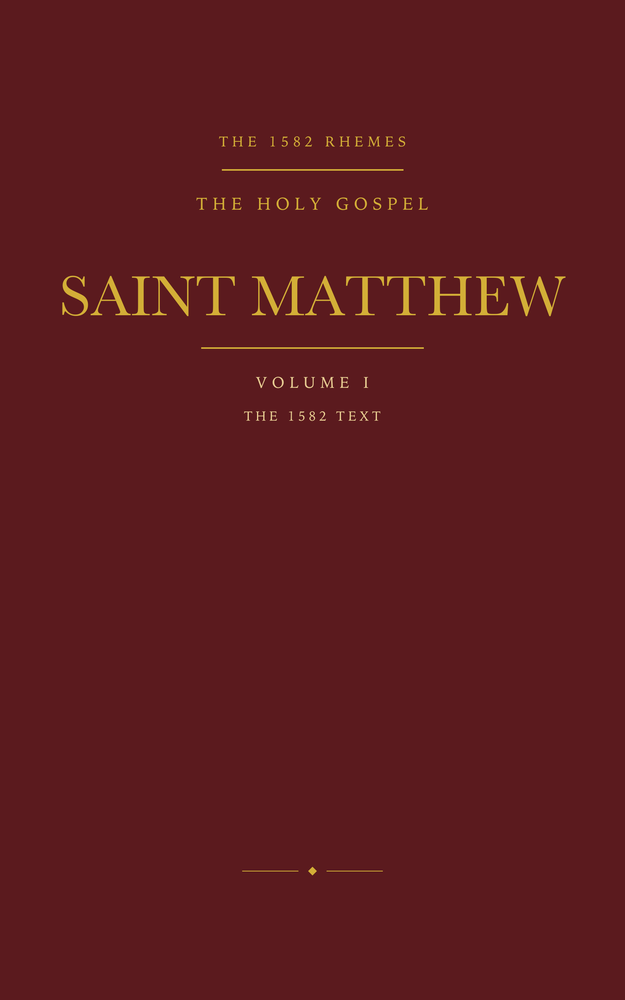
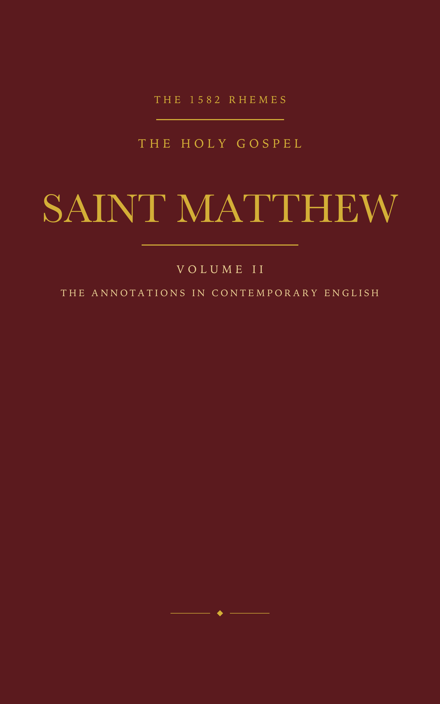

Mark Mann-Harris • Birthing Awareness Publishing
“The text as it stood. The annotations as they meant.”
Thirty years before the King James Version, Catholic scholars translated the New Testament under persecution in Rheims. Discover the original 1582 text and the rigorous, polemical annotations that every modern edition discarded.
Every traditional Catholic already owns a Douay-Rheims. Almost all of them own Challoner’s eighteenth-century revision, which is the standard text and which left the annotations out.
This is not a new Bible. It is the 1582 text as it was printed, and — separately, in English you can actually read — the annotations every modern edition throws away. The annotations are the product: argumentative, learned, and a direct window on how English Catholics read Scripture under persecution.
The Editions

The complete Gospel of Matthew as it was printed at Rheims in 1582: the first Catholic New Testament in English, translated from the Latin Vulgate thirty years before the King James Version.

The exact same argument, citations, and polemic charges of 1582 rendered in present-day English so modern readers can finally follow the argument without the barrier of the language.
Witness how the 1582 Rheims translators argued their case in sixteenth-century print, and how Volume II renders that exact polemic into clear, contemporary English.
“18. And vpon this rocke.] Vpon that which he said Peter was, wil he build his Church: and therfore by most euident sequele he foundeth his Church vpon Peter. And the Aduersaries wrangling against this, do against their owne conscience and knowledge: specially seing they know and confesse that in Christes wordes speaking in the Syriake tonge, there was no difference at al betwene Petrus and Petra…”
“Upon that which he said Peter was, he will build his Church; and therefore by most evident consequence he founds his Church upon Peter. And the adversaries, wrangling against this, do it against their own conscience and knowledge — especially seeing they know and confess that in Christ’s words, spoken in Syriac, there was no difference at all between Petrus and Petra…”
Volume II contains 250 chapter annotations and 432 marginal notes, keyed directly to Volume I.
For Father John Owens — faithful servant of Christ and friend.
The dedication is his because the work is. He asked the question that started it — what is it that makes the Douay-Rheims hard to read? — and the answer, the names, set the shape of the whole.
He chose Matthew, chose the King James as the reference, and read the first sample with a priest’s eye and a friend’s honesty. And when he explained why Challoner’s revision left the annotations out, the second volume began.
M. M-H.
This is the 1582 Rheims — the original editio princeps. It is completely distinct from Bishop Challoner’s eighteenth-century revision (1749–52), which modernized the language and notoriously omitted the original polemical annotations.
No. These volumes are a historical and scholarly republication of the 1582 editio princeps and its contemporary rendering. They do not carry a modern ecclesiastical imprimatur, nor are they offered for liturgical use.
Volume I preserves the original 1582 spelling, contractions, and marginal notes to provide an uncompromising historical witness. Where names differ between Rheims and the King James Version, KJV forms are supplied in square brackets for immediate recognition.
Not strictly. Volume II stands on its own as a fascinating reading text of sixteenth-century Catholic apologetic commentary. However, because every note is keyed chapter and verse, pairing Volume II with Volume I (or with any standard Douay-Rheims) unlocks their full explanatory power.
Yes. The complimentary PDF contains all 1,071 verses of the Gospel of Matthew in the complete 1582 Rheims formatting.
The 1582 text is public domain, and the complete edition is free as a PDF — no email, no list. Volume II, the annotations in present-day English, is in paperback and on Kindle.
The complete 196-page edition, all 1,071 verses. 487 KB.
Volume I is free as a PDF, and it is a book. Volume II is a book only — the annotations exist in print and on Kindle, and in no other form. Cream paper, UK English, printed to order.
The free PDF is a working edition of Volume I. Corrections are welcome — write and they will go into the next printing.